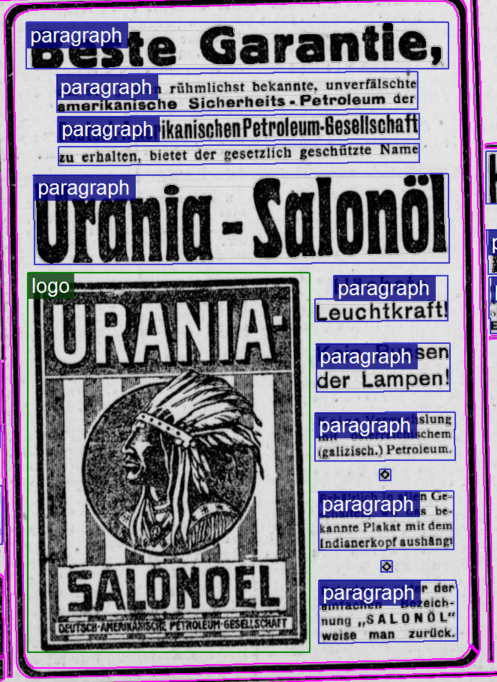

Ground Truth Richtlinienen OCR-D: Koordinierten Förderinitiative zur Weiterentwicklung von Verfahren der Optical
Character Recognition gefördert von der DFG
Werbung (AdvertRegion)
Werbung, Anzeigen, Reklame, Annonce, Inserate sind als AdvertRegion zu
kennzeichnen. Eine Auszeichnung von einzelnen Anzeigen bei Zeitungen ist abzusehen,
sondern der gesamte Bereich der Anzeigen ist mit der AdvertRegion zu markieren.
Innerhalb einer Anzeige können sich weitere Regionen befinden, die entsprechend ihrer
strukturellen Bedeutung ebenfalls zu markieren sind.
Abbildung 1. BuchanzeigeAbbildung 2. Anzeigeteil in einer Zeitung. Link: https://www.deutsche-digitale-bibliothek.de/newspaper/item/MZUUFGMCRVPAJE4WGHIU2HAPCSN36L6G?issuepage=4
Abbildung 3. Detail Anzeige in einer Zeitung. Link: https://www.deutsche-digitale-bibliothek.de/newspaper/item/MZUUFGMCRVPAJE4WGHIU2HAPCSN36L6G?issuepage=4

Abbildung 4. polygone Segmente, Quelle: Berliner Lokal Anzeiger, 14 Mai 1910.. Link: Präsentation im DFG-Viewer